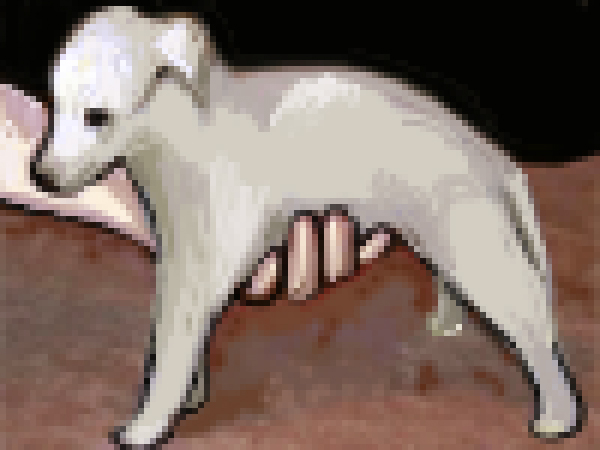

<!DOCTYPE html>
<html lang="en">
<head>
    <title>Saul got up from the ground, but when he opened his eyes he could see nothing. So they led him by the hand into Damascus.</title>
        <style>*{
    margin: 2;
    padding: 2;
}
body{
    min-height: 100vh; 
    display: flex;
    align-items:left;
    justify-content: left;
    background-color: black;
} 
h1{
    font-family: "times new roman", monospace;
    font-size: 5em;
    color:antiquewhite;
    word-wrap: true;
}
.typewriter{
    position: relative;
    animation-timing-function: steps(0,end);
}
.typewriter::after{
    content: ' |';
    position: absolute;
    right: 0;
    color: transparent;
    background-color: black;
    white-space: wrap;
    width: 100%;
    animation: typing 10s steps(100), step-end, alternate infinite,
                line 1s alternate;
    animation-duration: 1s;
    animation-fill-mode: forwards;
    animation-timing-function: steps(0, end);
}
@keyframes typing{
    to{
        width: 0%;    
    }
}
@keyframes line {
    100%{
        color: transparent;
    from{
        width:100%;
    }
    }   
}
#dog {
    position: absolute;
    top: 400px;
    right: 500px;
}
</style>
</head>
<body>
    <h1 class="typewriter"><a href=BD3b.html style="color: #ffffff;> I was meant for you. I was meant for your love </h1></a>
    
</body>
</html>
